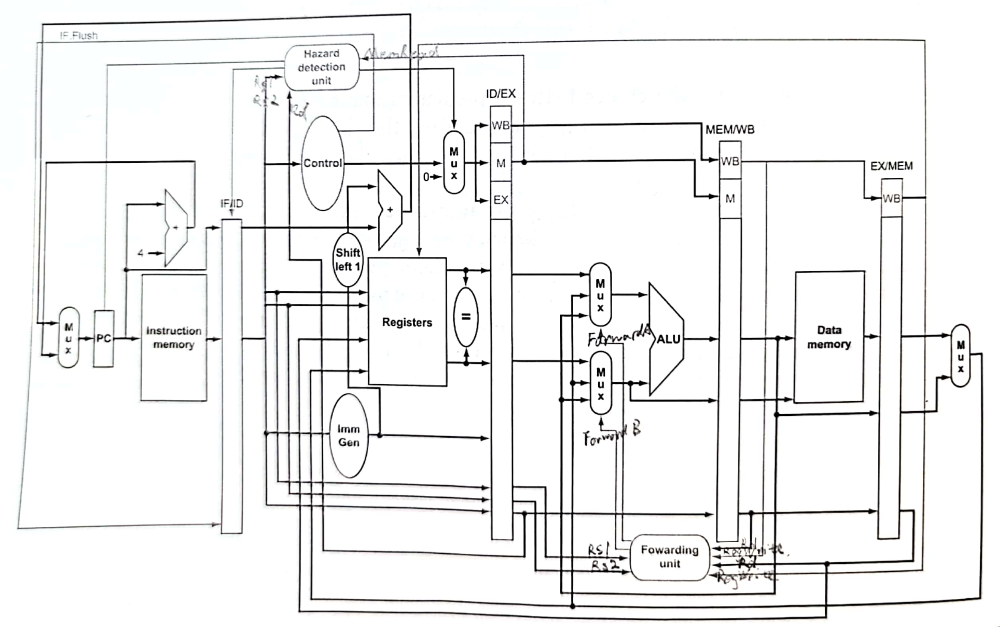

《计算机组成与设计 硬件/软件接口》笔记
Gu Wei 2022年6月
读的是英文版，risc-v版，原书第5版，机械工业出版社。原名为《Computer Organization and Design The Hardware/Software Interface, RISC-V Edition》
主要就是谈一谈自己的想法，也不按照书上的小节顺序了。书是看完了前四章，第五章和第六章就跟着课上（上海交通大学，CS2305计算机系统结构，邓倩妮）来了。不同于操作系统整理的那么详细，本整理更多是一些内化后的东西。想要看懂的话，也是需要提前有一些基础知识的吧。限于水平，疏忽和误解在所难免。
本书的大体思路是：
- 绪论
- RISC-V
- 计算机如何做算术、RISC-V
- 处理器：单周期、流水线、多发射
- 存储器结构、虚拟内存
- 并行
个人觉得书还是不错的，把许多问题的前因后果帮你讲清楚。虽然是关于计算机组成的书，但是也涉及到了许多体系结构的内容（各种并行之类的）。总的来说值得一读！
Chapter 1
第一部分主要就是绪论了。作者站的高度很高。
1.1 八大思想
计算机体系结构有这么八个重要思想：
摩尔定律
英特尔创始人摩尔指出：集成电路上可以容纳的晶体管数目在大约每经过18个月便会增加一倍，性能也随之增加一倍。对于计算机架构师来说，由于设计体系结构的开发周期长，因此在设计体系结构的时候就要考虑到将来更高性能的处理器。
抽象
本书多次提到：指令集架构是硬件和低级软件之间的抽象层，它允许不同的硬件来运行相同的程序。说人话就是，我的处理器用的指令集是X86-64的，我可以买来各种不同品牌、型号、性能的硬件，只要我操作系统里有这个东西的驱动程序（当然是X86-64的），我就能立即使用这些硬件。当然个人认为抽象包含的东西很广，但书中并没有更多讨论了。
让常见事件运行得快
Amdahl's Law（阿姆达尔定律）指出提升的一个部分的性能对整个系统有多大影响取决于：1. 这部分有多重要；2. 这部分提升了多少。所以让常见事件运行得快是提升系统性能的重要思想。需要强调的是：整体性能的提升并不会与部分性能的提升成比例。
通过并行提升性能
先再次明确并行（parallelism）和并发（concurrency）的区别。并行是指：多个处理器同时处理单个或多个任务；并发是指：单个处理器依次处理多个任务。但是我对这个定义存疑，个人认为并行并不严格需要多个处理器，只需要多个处理单元即可。
再谈论为什么我们会从单核处理器走向多核处理器。从1986年到2002年，微处理器的性能以平均50%的速度不断提升。但从2002年开始，单处理器的性能提升速度下降到每年大约20%。单核处理器发展遇到瓶颈主要在于能耗的上升、散热能力达到极限。与其去设计更快更复杂的单核处理器，不如放置多个相对简单的多核处理器。
通过流水线提高性能
既然处理器的不同部分分管不同的活，自然要让他们忙起来！
通过预测提高性能
只要预测成功率较高、从预测失败中恢复的代价不大，便可以预测。
存储器分级
多级缓存。
通过冗余设计提高可靠性
RAID是个好例子。
1.2 性能
1.2.1 如何定义性能
我们通过时间来衡量性能。时间可以分为两种：
wall clock time, response time, elapsed time: 跑一个任务实际花费的时间，包含了I/O活动、磁盘访问、操作系统的调度时间等等。
CPU execution time, CPU time: CPU实际花费的时间，不再包括I/O活动、访存等。还可以细分为：
- user CPU time: The CPU time spent in a program itself.
- system CPU time: The CPU time spent in the operating system performing tasks on behalf of the program.
我们真正关心的是user CPU time。
1.2.2 CPU 性能公式
CPI：clock cycles per instruction
需要强调，若只用instruction count、CPI、clock cycle time三个中部分来评价性能的话是不正确的。比如MIPS（millon instructions per second）没有把指令数考虑进去，一个程序可能有很高的MIPS，但是指令数很多，该程序并不一定会有很好的性能。
此外这三个因素相互影响相互关联。
1.3 能耗
现在的集成电路采用的科技是CMOS（互补金属氧化物半导体），它的能耗是动态的，公式为：
近20年，CPU频率上升了1000倍（i3 10100是3.6GHz），电压从5V降到了1V，能耗上升30倍。
但是电压下降使得CPU中存在泄漏电流（leakage current），浪费能源。服务器芯片大约40%的能耗是由泄漏导致的。
此外还需强调，同一块芯片中能耗和性能也不成正比。比如100%使用时是260W，而10%使用时也有121W。
Chapter 2
这一章主要介绍RISC-V指令集。RISC-V的二进制编码采用小端格式，譬如0x1234567存在0x100时：
| 地址 | 0x100 | 0x101 | 0x102 | 0x103 |
|---|---|---|---|---|
| 大端 | 01 | 23 | 45 | 67 |
| 小端 | 67 | 45 | 23 | 01 |
2.1 RISC-V Base and Extension
RISC-V可以被分成基本指令I以及五个拓展指令M、A、F、D和C。本书探讨的是64位地址的指令集，对应的RISC-V叫做RV64I、RV64M以此类推。RISC-V基本和拓展指令一共有184个，此外还有13个系统指令（具体个数可能会有出入）。其划分依据为：
| Mnemonic | Description | Insn. Count |
|---|---|---|
| I | Base architecture | 51 |
| M | Integer multiply/divide | 13 |
| A | Atomic operations | 22 |
| F | Single-precision floating point | 30 |
| D | Double-precision floating point | 32 |
| C | Compressed instructions | 36 |
这章我们将会探讨RV64I和RV64A。Chapter 3会探讨M、F、D拓展指令。
2.2 寄存器约定
| Register | Name | Use | Saver |
|---|---|---|---|
| x0 | zero | the constant value 0 | N.A. |
| x1 | ra | return address | caller |
| x2 | sp | stack pointer | callee |
| x3 | gp | global pointer | -- |
| x4 | tp | thread pointer | -- |
| x5-x7 | t0-t2 | temporaries | caller |
| x8 | s0/fp | saved register/frame pointer | callee |
| x9 | s1 | saved register | callee |
| x10-x11 | a0-a1 | function arguments/return values | caller |
| x12-x17 | a2-a7 | function arguments | caller |
| x18-x27 | s2-s11 | saved registers | callee |
| x28-x31 | t3-t6 | temporaries | caller |
| f0-f7 | ft0-ft7 | FP temporaries | caller |
| f8-f9 | fs0-fs1 | FP saved registers | callee |
| f10-f11 | fa0-fa1 | FP function arguments/return values | caller |
| f12-f17 | fa2-fa7 | FP function arguments | caller |
| f18-f27 | fs2-fs11 | FP saved registers | callee |
| f28-f31 | ft8-ft11 | R[rd] = R[rs1] + R[rs2] | caller |
下面是几点说明：
- 以上寄存器都是64位（当然RV32I的话就是32位了）。f是浮点寄存器，为完整性，在此记录。
- caller是调用者要想办法保存（如果需要的话），被调用的函数可以随意修改这些寄存器。callee是被调用者必须要保存（压到栈中），返回到调用者时，再重新load回来，保证这些寄存器值不变。
- x0寄存器永远是0，任何写入x0寄存器的值都将被丢弃。
- x1寄存器用来存函数范围地址的，详情见jal和jalr指令。
- fp通常是不使用的。可变栈帧才需要fp。
- 栈帧结构与x86类似（应该就是一致吧）。从高地址到低地址依次是保存的返回地址、saved saved registers（s0-s7）和局部变量。在保存的返回地址上面的栈帧最后还可能有argument build area，如果传入的参数个数大于八个的话。当然如果没有必要存在栈中，就不存了。
- name列个人理解为别名，就是在写汇编程序的时候可以用sp替代x2。事实上，书上示例代码中都是用sp来表示栈顶指针的，但是没有见到其他的替代（譬如a0替代x10）。不过课上大量用了name列。
2.3 常见指令
| Category | Instruction | Example | Meaning | Format |
|---|---|---|---|---|
| Arithmetic | Add | add x5,x6,x7 | x5=x6+x7 | R |
| Subtract | sub x5,x6,x7 | x5=x6-x7 | R | |
| Add immediate | addi x5,x6,20 | x5=x6+20 | I | |
| Add word | addw x5,x6,x7 | x5=x6+x7 | R | |
| Subtract word | subw x5,x6,x7 | x5=x6-x7 | R | |
| Add word immediate | addiw x5,x6,20 | x5=x6+20 | I | |
| Set if less than | slt x5,x6,x7 | x5=1 if x6<x7, else 0 | R | |
| Set if less than, unsigned | sltu x5,x6,x7 | x5=1 if x6<x7, else 0 | R | |
| Set if less than, immediate | slti x5,x6,x7 | x5=1 if x6<x7, else 0 | I | |
| Set if less than, immediate, uns. | sltiu x5,x6,x7 | x5=1 if x6<x7, else 0 | I | |
| Add upper immediate to PC | auipc x5,0x123 | x5=PC+0x123000 | U | |
| Data transfer | Load doubleword | ld x5,40(x6) | x5=memory[x6+40] | I |
| Store doubleword | sd x5,40(x6) | memory[x6+40]=x5 | S | |
| Load word | lw x5,40(x6) | x5=memory[x6+40] | I | |
| Load word, unsigned | lwu x5,40(x6) | x5=memory[x6+40] | I | |
| Store word | sw x5,40(x6) | memory[x6+40]=x5 | S | |
| Load halfword | lh x5,40(x6) | x5=memory[x6+40] | I | |
| Load halfword, unsigned | lhu x5,40(x6) | x5=memory[x6+40] | I | |
| Store halfword | sh x5,40(x6) | memory[x6+40]=x5 | S | |
| Load byte | lb x5,40(x6) | x5=memory[x6+40] | I | |
| Load byte, unsigned | lbu x5,40(x6) | x5=memory[x6+40] | I | |
| Store byte | sb x5,40(x6) | memory[x6+40]=x5 | S | |
| Load reserved | lr.d x5,(x6) | x5=memory[x6] | R | |
| Store conditional | sc.d x7,x5,(x6) | memory[x6]=x5; x7=0/1 | R | |
| Load upper immediate | lui x5,0x12345 | x5=0x12345000 | U | |
| Logical | And | and x5,x6,x7 | x5=x6&x7 | R |
| Inclusive or | or x5,x6,x7 | x5=x6|x7 | R | |
| Exclusive or | xor x5,x6,x7 | x5=x6^x7 | R | |
| And immediate | andi x5,x6,20 | x5=x6&20 | I | |
| Inclusive or immediate | ori x5,x6,20 | x5=x6|20 | I | |
| Exclusive or immediate | xori x5,x6,20 | x5=x6^20 | I | |
| Shift | Shift left logical | sll x5,x6,x7 | x5=x6<<x7 | R |
| Shift right logical | srl x5,x6,x7 | x5=x6>>x7 | R | |
| Shift right arithmetic | sra x5,x6,x7 | x5=x6>>x7 | R | |
| Shift left logical immediate | slli x5,x6,3 | x5=x6<<3 | I | |
| Shift right logical immediate | srli x5,x6,3 | x5=x6>>3 | I | |
| Shift right arithmetic immediate | srai x5,x6,3 | x5=x6>>3 | I | |
| 以上六个末尾加上w，生成新指令 | ||||
| Conditional branch | Branch if equal | beq x5,x6,100 | if(x5==x6) go to PC+100 | B |
| Branch if not equal | bne x5,x6,100 | if(x5!=x6) go to PC+100 | B | |
| Branch if less than | blt x5,x6,100 | if(x5<x6) go to PC+100 | B | |
| Branch if greater or equal | bge x5,x6,100 | if(x5>=x6) go to PC+100 | B | |
| Branch if less, unsigned | bltu x5,x6,100 | if(x5<x6) go to PC+100 | B | |
| Branch if greater or equal, unsigned | bgeu x5,x6,100 | if(x5>=x6) go to PC+100 | B | |
| Unconditional branch | Jump and link | jal x1,100 | x1=PC+4; go to PC+100 | J |
| Jump and link register | jalr x1,100(x5) | x1=PC+4; go to x5+100 | I |
几点说明：
d: doubleword, 8B; w: word, 4B; h: halfword, 2B; b: byte, 1B
没有subi是因为可以用addi代替，没有not是因为可以用xor FF...FF代替。可见addi的立即数可以表示负数，是带符号的。还有似乎好像应该那些做offset的立即数都是带符号的
逻辑右移：左边补零；算术右移：左边补符号位
对于load指令，好像可能应该都要做符号扩展，有u做零扩展，无u做符号位扩展。至少PPT上RV32I，lb符号扩展；书上RV64I，lw符号扩展。
load是从内存中加载数据到寄存器，store是从寄存器中存储数据到内存。
lr.d与sc.d是RV64A中的两个指令，以上其余指令都是RV64I的。若lr.d的内存在sc.d执行之前被修改，那么sc.d会失败且不向内存中写值。此外sc.d若成功则将某个寄存器值改为0，否则为非0值。下面是利用这两个指令实现原子交换的简单例子：
# an atomic swap between x23 and memory[x20]again: lr.d x10, (x20) # x10 = memory[x20]sc.d x11, x23, (x20) # 若memroy[x20]改变了，则x11非0；否则memory[x20]=x23且x11=0bne x11, x0, again # if x11 != 0, go to againaddi x23, x10, 0 # x23 = x10lui使得将32位立即数复制到寄存器可行。由2.4可知I-type的立即数编码只有12位，利用lui可扩展立即数的位数。lui拷贝一个20位的常数到寄存器的第12到31位（0-base），最左边的32位设置为第31位的值，最右边的12位设置为0。下面是具体方案：
xxxxxxxxxx# copy 00 00 00 00 00 3d 05 00 to x19lui x19, 0x3d0 # x19 becomes 00 00 00 00 00 3d 00 00addi x19, x19, 0x500但是这里还存在一个问题，addi的立即数会进行符号扩展（将最高的第11位扩展），产生如下问题：
xxxxxxxxxx# copy FF FF FF FF DE AD BE EF to x19lui x19, 0xDEADB # x19 becomes FF FF FF FF DE AD B0 00addi x19, x19, 0xEEF # we get FF FF FF FF DE AD AE EF, not the result we want解决方法是将
lui x19, 0xDEADB改成lui x19, 0xDEADCauipc对立即数的操作和lui一致。auipc和jalr的联合使用可以实现相对PC地址32位偏移量的相对跳转；lui和jalr的联合使用则实现了32位绝对地址的跳转。
x# jump PC-relative with 32-bit offsetauipc x1, <hi20bits> # PC加高20位后存在x1（不改变PC）jalr x0, x1, <lo12bits># call function at any 32-bit absolute addresslui x1, <hi20bits>jalr ra, x1, <lo12bits>同样的，个人认为也会存在lui的相同问题，但是没有搜到有人对此的讨论。
jal和jalr实现了类似x86的call和ret指令。对于leaf procedure (i.e. procedures that do not call others)，我们无需把x1压入栈中。通常是这样操作：
xxxxxxxxxx# a procedure sample(not a leaf procedure)func1:addi sp, sp, -32sd x1, 24(sp)sd x21, 16(sp)sd x20, 8(sp)sd x19, 0(sp)# ...jal x1, func2# ...ld x19, 0(sp)ld x20, 8(sp)ld x21, 16(sp)ld x1, 24(sp)addi sp, sp, 32jalr x0, 0(x1)此外，
jalr是I型的指令，书上都是写成jalr x0, 0(x1)这样子的，但是I型指令写成jalr x0, x1, 0可能更好一点。
此外assember还接受一些伪指令用来简化汇编程序的书写：
| pseudoinstruction | base instruction | meaning |
|---|---|---|
| li rd, immediate | addi rd, x0, immediate | Load immediate |
| la rd, label | 见表格后讨论 | Load label's address |
| mv rd, rs | addi rd, rs, 0 | Copy register |
| nop | addi x0, x0, 0 | No operation |
| and rd, rs, immediate | andi rd, rs, immediate | rd = rs & immediate |
| call label | 见表格后讨论 | |
| tail label | 见表格后讨论 | |
| ret | jalr x0, 0(x1) | return |
| jalr rs | jalr x1, 0(rs) | |
| jal label | jal x1, label | |
| j label | jal x0, label | |
| jr rs | jalr x0, 0(rs) |
注意到：
- 对于超过12位的立即数，li指令等价于：
xxxxxxxxxx# li rd, immediate# immediate larger than 12 bitslui rd, imm[31:12]+imm[11] # 当然没有imm[31:12]+imm[11]这种写法addi rd,rd,imm[11:0]- 加载32位地址，la等价于（然而64位地址咋办呢，现在母鸡啊）：
xxxxxxxxxx# la rd, label# load a 32-bit address# offset is the difference of address between label and PCauipc rd, offset[31:12]+offset[11]addi rd, rd, offset[11:0]- call label and tail label
xxxxxxxxxx# offset is the difference of address between label and PC# note that x6 is temporary variable# call labelauipc x6, offset[31:12]+offset[11]jalr x1, offset[11:0](x6)
# tail labelauipc x6, offset[31:12]+offset[11]jalr x0, offset[11:0](x6)最后谈一下和x86-64的一些指令上的异同：
- RISC-V很多都是三元的指令，而x86都是二元的。比如：
add x5,x6,x7和addq %rbx, %rax - RISC-V的条件分支不需要条件码，而x86需要。比如x86需要先cmp设置条件码后才能jmp，而RISC-V只需要一条指令就好了。不用条件码可以帮助减少设计流水线时的数据相关问题。
- RISC-V和x86对于比较大小都给出了无符号数和有符号数的版本。比如RISC-V条件跳转有bge和bgeu之分，而类似的x86有jge和jae之分。
2.4 Core Instruction Formats
指令编码可以分成六类：
对于不同类型的命名我推测如下
- R-type。R = register。特点为：需要三个寄存器，不需要立即数。比如：add、sll等
- I-type。I = immediate。特点为：两个寄存器，一个立即数。比如addi、slli等
- S-type。S = store。特点为：两个寄存器，一个立即数。比如各种store指令
- B-type。B = branch，又称SB-type。特点为：两个寄存器，一个立即数，且这个立即数一定是偶数（这是由指令地址一定是偶数所保证的：一个指令4字节，事实上此时最后两位都是0，但是为了兼容16位的RISC-V指令，这里只省去最低位），因此最低位必定是0，可以省略。比如各种branch指令。
- U-type。U=upper。特点为：一个寄存器，一个立即数。有lui指令、auipc指令。两者都设置寄存器的高20位（12-31位），可以用来把一个12位的立即数扩充到32位。
- J-type。又称UJ-type，UJ = unconditional jump-and-link。只有jal一个指令使用了UJ-type。特点为一个寄存器，一个立即数，且这个立即数一定是偶数，不必记录最低位。
几点说明：
这里所有的RISC-V指令都是32位的。当然RISCV其实有多种长度的编码格式，我们只关心32位的，32位的指令编码有特点：最低五位是abc11（abc不为111）的样子。
S、B、J-type中立即数奇怪的划分是为了和保证其余部分尽可能的统一。比如B-type和S-type中立即数的1～4以及5～10位是在相同编码位置的。
B-type和J-type的立即数不再需要最低位，这使得可以表示的立即数范围变大。
寻址很多时候采取的是PC-relative模式。
对于采用B-type的branch指令，可以有±4KiB的跳转范围（13位立即数）；对于采用J-type的jal指令，可以有±1MiB（21位立即数）的跳转范围；采用I-type的jalr指令偏移的地址范围在rs1寄存器中存储地址的±2KiB（12位立即数）。至于想要更大的跳转范围，需要使用auipc与jalr指令（相对PC）或者lui与jalr指令（绝对地址），前者跳转范围可达±2GiB（32位立即数），后者绝对地址范围32位。
可以看出jalr采用I-type浪费了最低位立即数，个人认为如果特地为jalr新设一种类型，会造成硬件实现上的困难。此外±2GiB已经挺大了。
branch指令只有±4KiB的跳转范围，可以使用以下技巧增大范围：
xxxxxxxxxx# origin codebeq x10, x0, farwulala# modifiedbne x10, x0, nextj farwulala
最后理应给出指令的opcode、funct3和funct7编码，但是个人觉得没有必要了。可以参考本书封底。
2.5 一个详实的例子
2.13节A C Sort Example to Put It All Together。P134～P139，一个冒泡排序的RISC-V汇编程序，值得一看。这里就不摘录下来了。
2.6 设计思想
- Simplicity favors regularity.
- Smaller is faster.
- Good design demands good compromises.
2.7 可执行文件的生成和执行
比较粗糙的整理。之前Chapter7 (Gu Wei.cn)也有整理，事实上已经忘光光了。csapp第七章链接相当难读。事实上，个人觉得有以下mind map即可。
高级语言程序通过compiler转换为汇编程序，汇编程序通过assembler转换为可重定位目标文件，多个可重定位目标文件通过linker链接成可执行文件，可执行文件由loader加载到内存。
编译器compiler做啥呢？多次扫描进行词法分析、语法分析、语义分析和优化、代码生成。这是编译原理关心的内容。
汇编器assembler做啥呢？替换伪指令，把那些指令中的label替换为相对偏移量offset，创建符号表、重定位表、代码段、数据段。
链接器linker做啥呢？把各种可重定位目标文件拼起来，把那些之前无法确定的值确定下来（譬如外部函数调用之类的）。
动态链接就是等到程序要加载时或要运行时才进行链接；而静态链接则在linker后就把所有东西都链接起来了，然后加载到内存。静态链接有以下缺点：需要定期维护和更新，占用大量的内存资源。
Chapter 3
这章先是介绍了整数的四则运算、背后的硬件设计和相关RISC-V指令，然后介绍浮点数、浮点数加法和乘法以及相关硬件，最后介绍子字并行和x86的SIMD相关内容。个人觉得讲的不够清晰，也可能是本人水平有限吧。
3.1 基本知识
之前的整理已经十分详细了，见https://iewug.github.io/book/csapp/chapter2.html
这里还有一点补充。
整数加减法的溢出。具体体现为正数相加为负数，负数相加为正数等，也就是运算结果超过了数据表示范围。x86会设置OF寄存器为1。如果最高位（符号位）用两位表示，00为正数、11为负数，那么01和10为溢出。也可以通过：最高位进位和次高位进位不同时为0或1（异或运算），来判断溢出。乘法指令一般没有判断溢出的功能，但我们可以通过运算结果是否超过数据表示范围进行判断。
整数的加减法以及和或等逻辑运算。通过ALU实现，ALU具体设计在本书附录A。
整数的乘法。主要思路就是通过移位和加法运算实现。先是给出一个和竖式乘法思路一致的乘法器，然后改良硬件使得移位和加法并行处理、寄存器进一步节约，最后通过引入大量的ALU使得一个64位乘法所需要的时间只要六次加法时间，并提及利用carry save adders或流水线可以进一步加快运算。
整数的除法。主要思路就是通过移位和减法运算实现。先是给出一个和竖式除法思路类似的乘法器，然后改良硬件使得移位和减法并行处理、寄存器进一步节约，最后可以通过预测来进一步加快运算时间。恢复余数法、加减交替法。
浮点加法。采用向偶舍入的方法。小阶往大阶对（下例中-2向-1对）；尾数加减；规格化（左规：尾数左移，阶码减一；右规：尾数右移，阶码加一）；舍入（四舍六入五凑偶）；溢出检查。不如举个例子：
在做计算的时候，尾数后面要再多保存三位，由高到低分别是guard、round、sticky位。当guard是0时，就不用进位了；guard为1，round为1，进位；guard为1，round为0，sticky为1，进位；guard为1，round为0，sticky为0，看guard前面一位（尾数最后一位），如果为0，就不进位，如果为1，进位。之所以要sticky位，考虑
浮点乘法。指数和指数运算，尾数和尾数运算，规格化，舍入，设置符号位。
3.2 RISC-V指令
关于RV64M有以下指令：
| Category | Instruction | Example | Meaning | Format |
|---|---|---|---|---|
| Arithmetic | Multiply | mul x5,x6,x7 | x5=x6*x7, lower 64 bits | R |
| Multiply high | mulh x5,x6,x7 | x5=(x6*x7)>>64 | R | |
| Multiply high,unsigned | mulhu x5,x6,x7 | x5=(x6*x7)>>64 | R | |
| Multiply high,signed-unsigned | mulhsu x5,x6,x7 | x5=(x6*x7)>>64 | R | |
| Divide | div x5,x6,x7 | x5=x6/x7 | R | |
| Divide unsigned | divu x5,x6,x7 | x5=x6/x7 | R | |
| Remainder | rem x5,x6,x7 | x5=x6%x7 | R | |
| Remainder unsigned | remu x5,x6,x7 | x5=x6%x7 | R | |
| 还有mulw divw remw remuw |
注意到：64位乘法的积是128位的，而寄存器只能存64位，故有multiply high这种指令。
关于RV64F和RV64D有以下指令：
RISC-V利用32个64位寄存器f0～f31来存储浮点数。
| Category | Instruction | Example | Meaning | Format |
|---|---|---|---|---|
| Arithmetic | add single | fadd.s f0,f1,f2 | f0=f1+f2 | R |
| subtract single | fsub.s f0,f1,f2 | f0=f1-f2 | R | |
| multiply single | fmul.s f0,f1,f2 | f0=f1*f2 | R | |
| divide single | fdiv.s f0,f1,f2 | f0=f1/f2 | R | |
| square root single | fsqrt.s f0,f1 | f0=√f1 | R | |
| add double | fadd.d f0,f1,f2 | f0=f1+f2 | R | |
| subtract double | fsub.d f0,f1,f2 | f0=f1-f2 | R | |
| multiply double | fmul.d f0,f1,f2 | f0=f1*f2 | R | |
| divide double | fdiv.d f0,f1,f2 | f0=f1/f2 | R | |
| square root double | fsqrt.d f0,f1 | f0=√f1 | R | |
| Comparison | equality single | feq.s x5,f0,f1 | x5=1 if f0==f1, else 0 | R |
| less than single | flt.s x5,f0,f1 | x5=1 if f0<f1, else 0 | R | |
| less than or equal single | fle.s x5,f0,f1 | x5=1 if f0<=f1, else 0 | R | |
| equality double | feq.d x5,f0,f1 | x5=1 if f0==f1, else 0 | R | |
| less than double | flt.d x5,f0,f1 | x5=1 if f0<f1, else 0 | R | |
| less than or equal double | fle.d x5,f0,f1 | x5=1 if f0<=f1, else 0 | R | |
| Data transfer | load word | flw f0,4(x5) | f0=memory[x5+4] | L |
| load double word | fld f0,8(x5) | f0=memory[x5+8] | L | |
| store word | fsw f0,4(x5) | memory[x5+4]=f0 | S | |
| store double word | fsd f0,8(x5) | memory[x5+8]=f0 | S |
3.3 子字并行
3.6 Parallelism and Computer Arithmetic: Subword Parallelism以及3.7 Real Stuff: Streaming SIMD Extensions and Advanced Vector Extensions in x86看的我不明觉厉。这里这能大概说一下思路。
一个128位的寄存器可以存4个32位的int数，现在可以用一个指令将这四个整数和另外四个整数相加，这就是向量或者SIMD（single instruction, multiple data）。通过这个方法我们可以让多核处理器更好地做并行运算。这样在一个wide word下发生的并行被称作子字并行（subword parallism），也可以被分到数据级并行（data level parallelism）之下。RISC-V目前没有相关指令，所以3.7讨论了x86下的SIMD操作。
x86中MMX（MultiMedia eXtension）支持整数向量的操作；SSE（Streaming SIMD Extension）支持单精度浮点数的操作；SSE2支持了双精度浮点数的操作，有128位的XMM寄存器；2011年发布了AVX（Advance Vector Extensions)，有256位的YMM寄存器。想要在C程序里使用到SIMD操作的话，需要学习SIMD编程，要学习x86intrin库。书上在3.8节给出了一个矩阵乘法的例子，这里不再展开了。
Chapter 4
第四章先是介绍顺序实现的处理器，然后是五级流水，最后再介绍了指令级并行。个人认为本书对流水线的介绍比csapp更流畅。csapp介绍流水线时充斥着过多的实现细节，更像是一个实验参考资料；而本书则更聚焦于主要思想。这一定程度上是由于csapp用自创的HCL硬件描述语言来描述各个硬件，在提供给读者一个模拟处理器方案的同时，也加大了行文上的困难。此外RISC-V的设计思想也进一步降低了流水线讲解的难度。但是还是觉得本章在讲述控制冒险和异常的时候，只是介绍为主，并没有深入挖掘。
在正式整理处理器前， 先补充点数电常识。
4.1 逻辑电路
由内部是否可以存储内存，可以把逻辑电路分为组合逻辑（combinational logic）和时序逻辑（sequential logic）。组合逻辑没有内存（memory），当输入一样的时候，输出也一样；而时序逻辑有内存，输出取决于当前内存和输入。
信号是true、1或是asserted对应着高电平；false、0、deasserted对应着低电平。
4.1.1 组合逻辑
- 解码器（decoder）：一个n位输入端口，
- 多路复用器（multiplexor）：利用控制信号来选择多个输入的其中一个，并输出
- ROM（read-only memory）：对于一个m位的输入（i.e.地址），有一个n位的输出（i.e.地址上的数据）
- PLA（可编程逻辑阵列）：利用与门和或门实现任意逻辑函数。想法是按照T列写逻辑函数，然后利用与门阵列和或门阵列实现。
- ALU（arithmetic logic unit）：实现加减法等算术运算以及与或等逻辑运算。
对于硬件描述语言，当下最流行的当属verilog。
4.1.2 时序逻辑
clock methodology采用edge-triggered clocking，也就是当低高电平转换的时候，元器件的状态会发生改变。
先给一个直观的例子。最简单的是S-R latch（set-reset latch），并不需要时钟信号。下图是两个或非门组成的sr锁存器。当R=0，S=1时，Q=1，Q‘=0；当R=1，S=0时，Q=0，Q’=1；当R=Q=0时，Q与Q‘的值由上一次R和Q的值决定；而R=Q=1时，Q与Q’值是不确定的，被认为是错误的操作。

锁存器（latch）和触发器（flip-flop）：两者的输出都是由内部存储状态（state）所决定，只是触发器在clock edge时才会更新状态，而锁存器在clock信号is asserted就会。而我们采用edge-triggered clocking，所以只使用触发器。
- D latch有两个输入C（clock signal）和D（data value）。当C=T时，输出=D；当C=F时，输出保持为之前值。
- D flip-flop：利用D latch可以造出。书A-52给出了一个falling-edge trigger的D flip-flop
寄存器文件（register file，寄存器堆）：写入受时钟控制，读取不受。也就是说读取可以当作是组合逻辑。同样的数据存储器（Data memory）也是一个写入受时钟控制、读取不受的单元。PC寄存器是时序电路。
关于时间的一些术语：
- Setup Time: The minimum time that the input must be valid before the clock edge.
- Hold Time: The minimum time during which it must be valid after the clock edge.
- "CLK-to-Q" Delay: how long it takes the output to change, measured from the edge of the CLK. 这里CLK就是C（clock signal）
4.2 顺序实现
我们只实现ld、sd，add、sub、and、or，beq七个指令。下面直接放出顺序实现的最终硬件版本。

基本上按照从左向右的顺序解读。由于许多内容环环相扣，可能会有点乱。下面以PC设置为例，讲解一下上图。
首先PC可能加4（每个指令都是四字节）或者由beq条件跳转。beq这个地址怎么生成呢？首先将指令全部传到Imm Gen（immediate generation）中，取出中间的12位立即数，然后将其符号扩展为64位。注意到B-type格式中立即数最后一位0被省略了，所以需要左移一位，再和当前PC加和。那么如何选取两个地址呢？这需要利用多路复用器，而控制信号就要讲讲Control单元了。
通过opcode（指令0～6位）就可以设置Control信号，具体如下表：
| Instruction | ALUSrc | MemtoReg | RegWrite | MemRead | MemWrite | Branch | ALUOp |
|---|---|---|---|---|---|---|---|
| R-type | 0 | 0 | 1 | 0 | 0 | 0 | 10 |
| ld | 1 | 1 | 1 | 1 | 0 | 0 | 00 |
| sd | 1 | x | 0 | 0 | 1 | 0 | 00 |
| beq | 0 | x | 0 | 0 | 0 | 1 | 01 |
x意味着随便设置；ALUOp信号是两位的，ALU控制信号具体细节如下：
| ALU control lines | Function |
|---|---|
| 0000 | AND |
| 0001 | OR |
| 0010 | add |
| 0110 | subtract |
ALU通过上述四位控制信号决定做什么运算，而ALU control lines的值怎么生成呢？具体如下表：
| ALUOp | Func7 | Func3 | ALU control |
|---|---|---|---|
| 00 | xxxxxxx | xxx | 0010 |
| x1 | xxxxxxx | xxx | 0110 |
| 1x | 0000000 | 000 | 0010 |
| 1x | 0100000 | 000 | 0110 |
| 1x | 0000000 | 111 | 0000 |
| 1x | 0000000 | 110 | 0001 |
可见区分add、sub、and、or只需要第30、14～12位，所以传入ALU control的信号是这几位。beq的ALUOp为01，那么ALU将会做减法运算。如果传入ALU的两个数据减法的差为0，那么ALU的ZERO端口将设置为1，再与branch信号做与运算，传入右上方的多路复用器，就会选择跳转地址作为下一次的PC了。
而将Control和ALU control分开可以降低各自的硬件复杂度，从而提升运行速度。
那ALU数据又哪里来呢，这要通过寄存器文件了。我们15-19，20-24，7-11位（分别对应编码中的rs1, rs2和rd）传入寄存器文件。由于beq设置RegWrite为0，所以7-11位没有任何作用。同样由于beq设置ALUSrc为0，所以我们选取Read Data2端口的数据而不是Imm Gen的数据传入ALU。
最后，beq设置MemWrite和MemRead都是0，所以将不会有内存的读写。我在想当我们设置MemRead为0时，那内存的Read data端口应当也是有值的吧（就是原先值，没有改变吧），应该是内存将不会去寻找这地址上的值，避免内存访问上时间上的开销。反正MemWrite控制信号为0，内存上的数据读了也写不进去。此外，课上（上交 邓倩妮 计算机体系结构）的Data Memory单元甚至没有MemRead控制信号，而是采用了MemRW来控制要么Read要么Write。
显然顺序实现的时钟周期过长，运行过慢了。于是引入了流水线。
4.3 五级流水
五级：取指IF、译码ID、执行EX、访存MEM、写回WB
冒险（hazard）：结构冒险（structural hazard）——硬件不支持一些指令组合操作；数据冒险（data hazard）——指令中存在数据相关，通过暂停stall和转发forward解决；控制冒险（control hazard）——利用预测来处理条件分支，从而产生了控制冒险。
下面这种脑图要有哈，分析的时候很重要的：

版本1——无法应对冒险
下面先放出一个包含控制信号，但是无法应对冒险的硬件版本。
引入了四个流水线寄存器，它们都是受时钟控制的时序逻辑电路。存储的数据一方面是左边stage算出来的值，另一方面是一些控制信号。譬如ID/EX寄存器存了WB、M、EX三类控制信号，PC值，rs1，rs2，扩展的立即数，部分指令。我们将之前七个控制信号按照作用的阶段分为三类，其中EX控制信号有两个ALUSrc、ALUOp，MEM有三个，WB有两个。
书上打了一个挺好的比方，流水线寄存器就像是洗衣服、烘干衣服、烫衣服过程中的衣服桶。
特别的，寄存器文件在前半个时钟周期写入，在后半个周期读取。这样使得一个寄存器若在同一个时钟周期读写的话，那么读的内容是刚刚写入的内容。
可惜存在冒险，我们不得不修改这个简单的设计。
版本2——应对冒险
数据冒险
数据冒险包含：先写后读（read after write, RAW）、先读后写（WAR）和写后再写（WAW）。
Forwarding unit用来实现转发，Hazard detection unit用来检测是否是load-use data hazard。一般数据冒险利用转发就可以完美处理了，然而load-use数据冒险需要先stall一个周期才能forward。
先考虑Forwarding unit的设计。我们只考虑EX阶段的数据冒险，一共有两类四种：
1a. EX/MEM.RegisterRd = ID/EX.RegisterRs1
1b. EX/MEM.RegisterRd = ID/EX.RegisterRs2
2a. MEM/WB.RegisterRd = ID/EX.RegisterRs1
2b. MEM/WB.RegisterRd = ID/EX.RegisterRs2
此外我们还需要考虑该指令是否写入寄存器（RegWrite==0）以及目标寄存器是否非零，从而避免一些错误的转发。通过以上数据设置ForwardA和ForwardB信号，多路复用器通过该控制信号选择ALU的参数是来自寄存器堆、先前的ALU结果还是内存的数据。
再考虑Hazard detection unit的设计。Hazard detection unit通过ID/EX.MemRead判断是否是load，再判断是否load后是否下一个指令就用了这个数据（ID/EX.RegisterRd == IF/ID.RegisterRs1/2)。如果确实产生了load-use data hazard就要stall the pipeline。暂停也就是要加入bubble，我们可以简单地通过设置ID/EX的控制信号都为0，并且保证PC寄存器和IF/ID流水线寄存器不变即可。
控制冒险
书上似乎并没有给出详细的方案，只是谈谈我们可以怎么做以及会遇到什么困难。我们采取了永远不跳转的预测方案（这样便于实现）。下图最明显的调整就是把跳转地址计算以及判断两个寄存器是否相等放到了ID阶段，而不是之前的EX阶段。这样如果预测失败的话，只需要一条指令需要被清空（flush）；如果预测成功的话完美解决问题，无需其余操作。为了清空IF阶段的指令，引入了IF.Flush信号，它将把IF/ID寄存器的指令部分置零。此外应当还需把WB、M、EX的控制信号置零。书上也没有更多展开了，个人觉得没有讲的很清楚。
然而这也引来了更多的麻烦事。我们需要判断寄存器文件中两个值是否相等，如果还满足是branch指令的话，需要把新的跳转地址转发到PC寄存器中。而寄存器文件的两个值可能是来自EX/MEM或MEM/WB寄存器中，这需要更多的转发组件。此外，对于一些特定的指令顺序我们还可能需要暂停来避免冒险。书上并没有对这一块进行展开，下图硬件设计上也没有体现。

此外，个人相当怀疑上图把MEM/WB和EX/MEM标反了。还有上图显然略去了Imm Gen在EX阶段的多路复用器，以及所有多路复用器的控制信号。
这里再讨论一下静态转移预测和动态转移预测。预测成功是不会有惩罚的，错误的话就flush掉错误的指令。
- 静态转移预测就是在程序运行前预测，比如预测分支永远不跳转或者永远跳转。
- 动态转移预测是在程序运行时进行预测，通过学习过去来预测未来。比如说，维护一个转移历史表（branch history table，BHT），可以利用指令某些位比如2～9位，来做一个索引，找到BHT的条目。条目可以是一位的，0的话就不转、1就转，如果预测错了就修正条目；条目也可以两位，11与10转、01与00不转，转换如下图：

此外，动态转移预测还需要维护一个BTB（branch target buffer）记录预测跳转地址，利用和BHT相同的索引方式，这样在IF阶段就可以知道预测地址了，无论预测是跳转还是不跳转。之前的实现是不跳转的话在IF阶段知道地址、跳转的话要在ID阶段知道地址。
版本3——应对异常
异常（exception）见之前整理的CSAPPchapter 8.1。这里主要讨论CPU对异常的支持。有的时候就用中断来统称异常，但是csapp是认为异常包含了中断。
RISC-V中为了处理异常，需要添加控制与状态寄存器（control and state register）。如下表所示：

简单来说，mepc记录发生异常的指令地址；mcause记录发生异常的原因；通过mtvec 可以找到响应的异常处理程序；mstatus可以：控制CPU进入内核态处理中断、禁止中断响应（即“关中断“），控制CPU进入用户态从中断返回、允许新的中断响应（即“开中断“）。当然，我们还需要把现场保护起来（把相关信息压入栈）。
本书给出了这样一个简单的设计。在IF、ID、EX流水线寄存器增加了flush控制信号；添加cause和epc两个寄存器分别记录异常的来由和异常指令的地址；对于异常发生后，应把PC置到操作系统预设的处理函数的地址。具体硬件图如下：

上图中，在EX阶段发生了溢出，于是我们flush掉IF、ID和EX阶段的指令，PC跳转到异常处理程序。
然而这个模型很粗糙。我们知道五级流水各阶段都可能会发生异常，比如取指——page fault or TLB miss，译码——未定义的指令，执行——溢出，访存——page fault or TLB miss。就可能产生多个指令异常同时发生、后面的指令先于前面的指令发生异常：

我们希望的是精确中断（precise interrupt）——中断指令前的所有指令都已完成、中断指令包括后续指令没有改变任何机器状态。有这样的一个设计：统一在写回阶段处理异常；之前阶段发生的异常由流水线寄存器记录并向后传递；异常发生后flush掉所有指令；如果一个指令在两个阶段都产生了异常，记录第一个异常；如果异步中断（如时钟中断）和同步的异常同时发生，可以先处理内部异常（避免饥饿）。

最后谈一下深度流水导致的问题：
开销增加：流水段越多，复杂度增加。
性能下降：流水段寄存器个数增加，一条指令的延迟就越大；重叠执行的指令越多，可能出现的相关性越多，停顿stall的可能性越大。
功耗增加：时钟频率高，功耗大。
4.4 指令级并行
这块内容在量化研究方法上用了200页的篇幅介绍，本书只用了13页，所以只能算是一个粗浅的了解吧。想要有更多了解要去看量化了，但是本人应该不会再深入研究这块内容了。
4.4.1 综述
流水线挖掘了指令间潜在的并行度，这种并行性被称为指令并行（instruction-level parallelism， ILP）。有两种方法可以增加潜在的指令级并行程度：1. 增加流水线的深度可以重叠更多的指令；2. 复制计算机内部部件的数量，使得每个流水线阶段可以启动更多指令。该种技术被称为多发射（multiple issue）。此外发射的地方叫做发射槽（issue slot）。
多发射我理解为一个处理器可以同时取多条指令并进行译码。实现多发射处理器主要有两种方式：静态（static）多发射和动态（dynamic）多发射。其区别是将主要工作交给编译器还是硬件来做。多发射流水线必须处理以下两个问题：1）怎么发，发多少条，发哪些；2）冒险怎么处理。
4.4.2 推测Speculation
推测可以由编译器或硬件来完成。感觉和流水线的预测prediction很像。主要要面对的麻烦是如何从错误的推测中恢复以及处理本不该出现的异常。
4.4.3 静态多发射处理器
所有的静态多发射处理器都是用编译器来帮助封装多条指令并处理冒险。在一个静态发射处理器中，可以在给定时钟周期内发射多条指令，也称为发射包（issue packet）。可以认为发射包就是一个指令多个操作，这也是最初名字超长指令字（VLIW, very long intruction word）的由来。
静态多发射处理器下的编译器的任务可能包括静态分支预测和代码调度（代码调度如循环展开，见4.4.7），以减少冒险或阻止所有的冒险。比如，编译器通过调度指令和插入nop等方法使得代码在执行时完全不需要冒险检测和硬件产生阻塞；或者利用硬件检测数据冒险并在两个发射包间产生stall，而编译器负责避免一个发射包中指令之间的依赖。
此外硬件也要修改，比如ALU的端口要增加，来避免结构冒险。
总之，静态多发射把大部分任务交给了编译器，以得到更加简单的硬件，并有成本低、能耗少的优势。但是劣势是更加致命的：
- 编译器需要知道处理器每次发射多少指令等相关架构，才能编写出适合该处理器的VLIW程序，这导致代码的可移植能力差，换一个环境后，代码往往需要重新编译
- 编译复杂、编译时间长
- 代码膨胀，譬如充斥大量空指令，或者采取循环展开时，也需要更多存储空间
4.4.4 动态多发射处理器
动态多发射处理器通常称为超标量处理器（superscalar）。超标量处理器都是由硬件来保证执行的正确性，并且编译得到的代码应当始终正常执行，而与指令发射速率和处理器的流水线结构无关。而静态多发射处理器下，当我们换环境时，代码往往需要重新编译。
在这种处理器中，流水线被划分为3个主要单元：一个取指与发射单元、多个功能单元和一个提交单元。利用各种缓冲区使得三个单元依次实现：顺序发射，乱序执行，顺序提交。之所以乱序执行是为了最大程度利用处理器的计算能力。保留站（reservation station）是功能单元的缓冲区，可以缓冲运算参数和运算符；提交单元里也有重排序缓冲区（reorder buffer）来缓冲结果，满足最后顺序提交的要求。动态多发射处理器的保留站和重排序缓冲区都提供寄存器重命名操作，来避免本应不存在的名称相关。

动态多发射和推测不可避免地增加了处理器的能耗和复杂度。所以处理器已经走向了多核处理器。
关于寄存器重命名，再多做一些介绍。乱序执行可能会导致本应不存在的名称相关，称为假相关。那些确实存在的相关就称为真相关。假相关包含输出相关和反相关。输出相关又称为(Write after Write)WAW相关，反相关又称为(Write after Read)WAR相关。通过寄存器重命名就可以避免这两种假相关了。例子如下：
xxxxxxxxxx# 输出相关 WAW相关# 如果lw晚于addu写$t0，那么sub会获得错误的$t0LW $t0,0($s1)ADDU $t0,$t1,$s2SUB $t2, $t0, $s2# 寄存器重命名解决上述问题LW $t0a,0($s1)ADDU $t0b,$t1,$s2SUB $t2, $t0b, $s2
# 反相关 WAR相关# 如果sub写结果早于add读F8，add会获得错误的F8ADDD F10,F0,F8SUBD F8,F8,F14# 寄存器重命名解决上述问题ADDD F10,F0,F8aSUBD F8b,F8a,F14
# 真相关 RAWmul r2, r0, r1add r4, r2, r34.4.6 课堂上对多发射处理器的分类
课上似乎对多发射的分类更加详细一点（似乎就是量化里的图。。。），如下：

静态调度方案是指编译器来尽可能完成冲突检测和指令调度；动态调度方案是指4.4.4节那样的操作，其中最著名的动态调度方案是Tomasulo，不再过多展开。
动态发射结构是指每次发射的指令数目是动态的，而静态发射结构每次发射的指令数是固定的、编译器预先设定好的（有依赖就发射空指令）。
4.4.7 优化程序性能
这一部分内容可以参考之前csapp第五章的整理。
注意到，循环展开（loop unrolling）可以提高性能是由于充分利用了功能单元且减少了分支预测次数。
Chapter 5
存储器层次结构这部分其实csapp第六章已经做了一定程度上的整理了。在之前csapp整理的基础上，再加入课堂上的内容，就得到了这部分的整理。并没有参考《计算机组成与设计 硬件/软件接口》，一是读起来感觉没什么新收获、行文拖沓，二是学期将尽时间紧张。
5.1 存储技术
我强烈觉得这部分内容如果没学过数电，还是具有一定困难的。但是我尽可能地还是去做了一些硬件层面的理解，虽然难免还是有偏差。事实上后面研究缓存时，存储器会进一步抽象，显得5.1节不那么重要了。
5.1.1 RAM
随机访问存储器（Random-Access Memory，RAM）可以分为两类：静态的RAM（SRAM）和动态的RAM（DRAM）。区别如下：
- SRAM：每一位保存到由6到8个晶体管电路构成的双稳态的（Bistable）存储器单元。只要有供电，它保存的数据就不会丢失。对光和电噪音等干扰不敏感。访问速度快，但造价较为昂贵且密集度低。适合作为小容量高速的高速缓存存储器。当下SRAM用作L1、L2、L3级缓存，且在CPU内部。
- DRAM：每一位都用一个电容的充电量来表示，且用一个晶体管来控制读写。除了有供电外，还需要刷新电路才能保持存储的数据不丢失，这是因为电容会漏电且读取操作会让电容电压降低（destructive read）。对光和电噪音等干扰敏感。访问速度相对较慢，但造价便宜且密集度高。适合作为主存。当下我们购买的DDR4内存条（DDR5都开卖了）就是一种DRAM。
下面是对DRAM的更多讨论
DRAM的简单认识
一些名称约定：
- cell：DRAM芯片中的一个bit
- supercell：w个cell组成的单元（似乎只有csapp这么叫）
- pin：引脚，每个引脚可以传递一个比特信号
现在将DRAM芯片（常称作内存颗粒）分为d个supercell，每个supercell中包含了w个cell。则称这是一个d × w DRAM芯片，存储了dw位信息。下图是一个16 × 8的DRAM芯片（16个supercell，每个supercell存8位数据）。

首先内存控制器通过addr引脚发送两位行地址到DRAM芯片，DRAM芯片找到该行并放入内部行缓冲区。内存控制器再发送两位的列地址，DRAM芯片找到行缓冲区的该列，并通过data引脚发送8位的数据（一个超单元存8位）到内存控制器。之所以把DRAM芯片排列成矩阵的形式，是为了减少addr引脚数。如果我们把八个这样的DRAM芯片封装到一个内存模块中，就可以一次能对64位字进行读写。
对DRAM刷新的进一步认知
一些名称约定：
- 存取周期：连续启动两次独立的“读”或“写”操作所需的最短时间。存取周期大于真正用于存取的时间，因为存取操作完还需要一些时间来更改状态。约0.5μs。
- 刷新时间：进行一次行刷新所用的时间，等于存取周期。
- 刷新周期：全部DRAM行进行一波刷新的周期。通常为2ms。
刷新方式有三种：
- 集中刷新：所有存储单元约好了一起刷新。此时不能进行正常读写，称为死时间或者访存死区。
- 分散刷新：大体想法是每读取一次，该行就刷新一次。不存在死区，但是加倍了存取周期。
- 异步刷新：通常采用的方法。把各行的刷新分散安排在刷新周期内。譬如我们要在2ms内对128行各刷新一遍，那么就每隔15.6μs刷新一行，而每行刷新的时间仍为0.5μs。对每行来说，刷新周期仍为2ms，而死时间为0.5μs。事实上，只要把刷新放在CPU的译码阶段，就不会遇到死区了。
DIMM——我们买的内存条
首先要知道，DDR全称是Double Data Rate SDRAM。SDRAM（Synchronous DRAM ）是指DRAM的时钟频率和计算机的系统总线同步。DDR是指DRAM在时钟上升沿、下降沿都传输数据。其中DDR一个时钟周期传两位数据（两位预取，2-bit prefetch），DDR2是4位预取，DDR3和DDR4都是8位预取（上升沿和下降沿各传4位数据，一个时钟周期传8位数据）。
DRAM芯片都放在DIMM（dual inline memory module，双列直插式存储模块）。如下图是一个DDR3的示例。双列应该体现在正反两面各有八个DRAM芯片（组成一个rank），它们共用了一组针脚。注意到，一个DRAM芯片每次传送8位数据，八个DRAM芯片传送64位数据。每个芯片由八个bank组成，每个bank同一时间只有一个能被选中。每个bank由16384行1024列个超单元组成，每个超单元有8位。每个bank有自己的行列decoder和行缓冲区，可以并行读写（不是严格同时，可见图示），增加带宽。这种方法称为地址交叉（address interleaving）。


命名
虽然是古早的数据了，但是很典型。我是这么理解下面的数据的。核心频率是DRAM内部的时钟频率；IO频率就是存储器总线的时钟频率，由于DDR2是四位预取每次传2位数据，所以IO频率是核心频率的两倍，同理DDR3是八位预取每次传4位数据，所以IO频率是核心频率的四倍；有效传播频率是IO频率的两倍，这是因为DDR在上升沿和下降沿都进行一次数据传播；单通道带宽是有效传播频率的八倍，这是因为每次传播8个字节（64位数据）。
可能对“单通道带宽是有效传播频率的八倍“感到疑惑，可能觉得是一次传一位数据，而不是64位。个人认为之前所说的八位预取是针对一个cell来说的，这里“每次传播8个字节”则是针对DIMM所说的。
| DRAM name | DIMM name | 核心频率 | I/O频率 | 有效传输频率 | 单通道带宽 | 双通道带宽 |
|---|---|---|---|---|---|---|
| DDR2-667 | PC2-5300 | 166MHz | 333MHz | 667MHz | 5.3 GB/s | 10.6 GB/s |
| DDR2-800 | PC2-6400 | 200MHz | 400MHz | 800MHz | 6.4 GB/s | 12.8 GB/s |
| DDR3-800 | PC3-6400 | 100MHz | 400MHz | 800MHz | 6.4 GB/s | 12.8 GB/s |
| DDR3-1066 | PC3-8500 | 133MHz | 533MHz | 1066MHz | 8.5 GB/s | 17.0 GB/s |
| DDR3-1333 | PC3-10600 | 166MHz | 667MHz | 1333MHz | 10.6 GB/s | 21.3 GB/s |
| DDR3-1600 | PC3-12800 | 200MHz | 800MHz | 1600MHz | 12.8 GB/s | 25.6 GB/s |
理解性能参数
- tRCD：row to column delay，从行选到列选的延迟时间
- CL：CAS (column adress strobe) latency，从列选到数据输出的延迟周期数
- tRP：RAS (row address strobe) precharge，行预充电的延迟时间
想要理解这些参数（主要是precharge）必须深入看看硬件实现。下面是一个cell阵列。每个cell由一个晶体管和电容组成。首先我们要进行precharge，即给bit line充上DRAM工作电压的一半（1.5V）。然后把目标word line设置为asserted，这样原来没有充电的电容会被充上一点电，sense amplifier会感知到bit line电压低于1.5V；原来充好电的电容会失去一点电量，sense amplifer会感知到bit line电压高于1.5V。基于此我们便把一行数据读了出来。通过上述过程我们也可以看出DRAM的读取是破坏性的。

于是我们可以得到如下示意图：

5.1.2 ROM
之前介绍的DRAM和SRAM在断电时都会丢失数据，所以是易失的（Volatile）。而非易失性存储器（Nonvolatile Memory）即使断电后，也会保存信息，该类存储器称为只读存储器（Read-Only Memory，ROM）。事实上现在ROM中有的类型既可以读也可以写了。ROM可以分为以下几类：
- PROM：programmable ROM，由保险丝等实现，只可编程一次
- EPROM：erasable programmable ROM，通过石英、紫外线等物理手段实现。可以擦写1000次
- EEPROM：electrically erasable PROM，由电路实现，可擦写100000次
- Flash memory：闪存，基于EEPROM，固态硬盘（SSD，Solid State Disk）就基于闪存
存储在ROM设备中的程序称为固件（Firmware），包括BIOS、磁盘控制器、网卡、图形加速器和安全子系统等。当计算机系统通电后，会运行存储在ROM中的固件。
5.1.3 磁盘
磁盘（Disk）是被用来保存大量数据的存储设备，但是读信息的速度比DRAM慢10万倍，比SRAM慢100万倍。

上图所示的是一个磁盘的构造。磁盘是由多个叠放在一起的盘片（Platter）构成。每个盘片有两个覆盖着磁性记录材料的表面（Surface）。每个表面由一组称为磁道（Track）的同心圆组成。每个磁道被划分为若干扇区（Sector）。每个扇区包含相同数量的数据位（通常为512位）作为读写数据的基本单位。扇区之间通过间隙（Gap）分隔开来，间隙不保存数据信息，只用来表示扇区的格式化位。通常会使用柱面（Cylinder）来描述不同表面上相同磁道的集合，比如柱面k就是6个表面上磁道k的集合。盘片中央会有一个可以旋转的主轴（Spindle），使得盘片以固定的旋转速率（Rotational Rate）旋转，单位通常为RPM（Revolution Per Minute）。
现代大容量磁盘采用多区记录（Multiple Zone Recording）技术，将一组连续的柱面划分成一个区。在同一个区中，每个柱面的每条磁道都有相同数量的扇区，数量由该区中最内侧的磁道决定。由此外侧的区能划分成更多的扇区。但有意思的是，即便采用了多区记录，磁盘仍提供给操作系统一个虚拟的空间布局，仍然所有的磁道有相同的扇区数量。
磁盘的性能可由以下几个参数评价
- seek time：找磁道所花时间
- rotational latency：找扇区所花时间
- transfer time：传播数据所花时间
5.1.4 SSD
固态硬盘（Solid State Disk，SSD）是一种基于闪存的存储技术。从CPU的角度来看，SSD与磁盘完全相同，有相同的接口和包装。

如上图所示是一个SSD的基本结构。它由闪存和闪存翻译层（Flash Translation Layer）组成
- 闪存翻译层是一个硬件/固件设备，用来将对逻辑块的请求翻译成对底层物理设备的访问。
- 闪存的基本属性决定了SSD随机读写的性能，通常由B个块的序列组成，每个块由P页组成，页作为数据的单位进行读写。通常页大小为512B~4KB，块中包含32~128页，则块的大小有16KB~512KB。
SSD的随机写操作慢于随机读操作，这是因为：1）擦除块耗时长；2）当块中包含其他数据时，会先将块中带有有效数据的页复制到被擦出过的块中，才能对那个块进行擦除。
SSD的优缺点：
- 优点：由于闪存是半导体存储器，没有移动的部件，所以速度比磁盘更快且磨损小，能耗低
- 缺点：SSD每字节比磁盘贵大约30倍。此外SSD做为一种闪存也有擦除次数的限制，但是由于闪存翻译层会把擦除尽可能平分到每一个块中，这件事情不用担心。
5.2 局部性
高速缓存（cache）是小而快的存储器，它存放着大且慢存储器里的部分数据。如果我们访问的数据均来自顶层的缓存之中，则可以提高程序运行速度。这一点可由程序的局部性（locality）保证。局部性有两种：
- 时间局部性（Temporal Locality）：引用过的数据项在不久会被多次引用。譬如循环会多次访问相同的数据和代码。
- 空间局部性（Spatial Locality）：引用过的数据项，在不久会引用附近的数据项。譬如访问数组。
5.3 存储器层次结构

存储器层次结构的中心思想是让层次结构中的每一层来缓存低一层的数据对象，将第k层的更快更小的存储设备作为第k+1层的更大更慢的存储设备的缓存。显然该结构利用了局部性。
相邻层的存储器以块（block）（有时也称做行，line）作为数据传送单元。通常较低层的存储器使用较大的块。
5.3.1 缓存命中
当程序需要第k+1层的某个数据对象d时，会先在第k层的块中搜索d，如果d刚好缓存在第k层中，则称为缓存命中（Cache Hit）。于是该程序会直接从第k层中读取d。
5.3.2 缓存不命中
如果第k层没有缓存数据对象d，则称为缓存不命中（Cache Miss）。则会从第k+1层中取出包含d的块，然后第k层的缓存会执行某个放置策略（Placement Policy）来决定该块要保存在第k层的什么位置。如果第k层的缓存满了，则会覆盖现存的一个牺牲块（Victim Block），称为替换（Replacing）或驱逐（Evicting）这个牺牲块，会根据替换策略（Replacement Policy）来决定要替换第k层的哪个块。
替换策略（如FIFO、LRU之类的）在操作系统页面替换算法已经详细讨论过了，这里就不再展开。放置策略将与缓存的组织结构相关，这将是5.4节讨论的重点。
特殊地，如果第k层的缓存为空，那么对于任意的数据对象的访问都会不命中。空的缓存称为冷缓存（Cold Cache），该不命中称为强制性不命中（Compulsory Miss）或冷不命中（Cold Miss）。
特殊地，如果访问的块是一个相对不变的集合，比如在嵌套循环中反复访问一个数组的每个元素，那么该集合称为工作集（Working Set）。如果工作集大小超过缓存大小，则缓存会出现容量不命中（Capacity Miss），这是由缓存太小导致的。
5.3.3 缓存管理
缓存在现代计算机系统中无处不在：

当下Intel酷睿处理器告诉高速缓存层次结构如下：（i-cache：只保存指令的高速缓存；d-cache：只保存程序数据的高速缓存）

5.4 高速缓存存储器组织结构
要讨论放置策略，即新来的块应该放在何处。有三种方法：
- 直接 (direct mapped)：只能放在一个块中
- 全相联 (fully-associated)：可以放在任何块中
- 组相联 (set-associated)：可以放在一组块的任何块中
其实也就是在讨论给出一个地址，如何找到缓存中相应的一字节数据。
5.4.1 通用的高速缓存存储器组织结构

如上图b中所示，会将m位的地址划分成三部分：
- s位：高速缓存被组织成S = 2s 组（set）
- b位：每个组包含E个高速缓存行（line），每行有一个高速缓存块（所以block有时也称做line），每个高速缓存块有B = 2b个字节。E的大小也称作路（way）。
- t位：每一个高速缓存行有一个t = m - s - b位的标记位（tag）
显然可以方便地通过地址确定目标数据块。该高速缓存的结构可以通过元组(S, E, B, m)来描述，且容量C为所有块的大小之和，C = S × E × B。
5.4.2 直接映射高速缓存

如上图所示，当E = 1时，高速缓存称为直接映射高速缓存（Direct-mapped Cache），每个高速缓存组中只含有一个高速缓存行。
首先读取地址的s位，找到该组。然后检查有效位是否为1以及标记和t位是否一致。如果一致，再通过b位找到目标字节，返回即可。如果不一致，则发生不命中情况，从下一级的缓存找到该目标高速缓存块，并替换当前的块。
运气不好的话，会发生抖动（Thrash），即高速缓存反复地加载和驱逐相同的高速缓存块的组。
优点
- 地址变换速度快，一对一映射
- 替换算法简单、容易实现
缺点
- 容易冲突，cache利用率低
- 命中率低
5.4.3 组相联高速缓存
直接映射高速缓存的冲突不命中是由于每个高速缓存组中只有一个高速缓存行，所以扩大E的值，当1 < E < C/B时，称为E路组相联高速缓存（E-way set associative cache）。下图所示的是一个2路组相联高速缓存。

当缓存不命中时需要进行缓存行替换，如果对应的高速缓存组中有空的高速缓存行，则直接将其保存到空行中。但是如果没有空行，就要考虑合适的替换策略。
关于比较地址的tag部分和缓存的标记位，可以同时进行，不需要顺序比较。
5.4.4 全相联高速缓存
全相联高速缓存（Fully Associative Cache）是用一个包含所有高速缓存行的组组成的，其中E = C/B，即S = 1。

由于全相联高速缓存只有一个组，所以不包含组索引编码。其行匹配和字选择与组相联高速缓存相同，只是规模大小不同。想要得到高速的全相联高速缓存十分困难，但是块冲突的概率低（只有装满后才会出现块冲突），所以通常适合用于较小的高速缓存，比如TLB。
5.4.5 写操作
当CPU想要对地址A进行写操作时，会通过地址A判断是否缓存了该地址，如果缓存了则称为写命中（Write Hit），否则称为写不命中（Write Miss）。问题的关键在于如何保证缓存之间数据块的一致性。下面分别分析写命中和写不命中的不同实现思路：
写命中
- 直写（Write-Though）：立即更新下一层的副本值。缺点是每次写都会引起总线流量。
- 写回（Write-Back）：为每个高速缓存行维护一个脏位（Dirty Bit），表明这个高速缓存块是否被修改。当被修改的高速缓存块被驱逐时，才会更新下一层的副本值。能够显著减少总线流量，但是复杂性高。
写不命中
- 写分配（write-allocate）：加载相应的下一层的块到当前层的高速缓存中，然后更新当前高速缓存块。得益于空间局部性，进行一次写分配后，下一次有较高几率会写命中，但是缺点是每次写不命中就要将块从低级向上传输。
- 写不分配（no-write-allocate）：绕过缓存，直接把内容写到下一层中
直写高速缓存通常为写不分配的，写回高速缓存通常为写分配的。建议采用写回写分配模型，因为随着逻辑电路密度的提高，写回的复杂性不再成为阻碍，并且和处理读相同，都利用了局部性原理，效率较高。
5.4.6 一道题
cache可能是：
- associativity (1, 2 or 4 ways)
- block size (1, 2, 4, 8 or 32 bytes)
- total cache size (256B or 512B)
- replacement policy (LRU or FIFO)
已知四个访问地址序列和相应的命中率如下：
| sequence | address sequence | hit ratio |
|---|---|---|
| 1 | 0,2,4,8,16,32 | 0.33 |
| 2 | 0,512,1025,1536,2048,1536,1025,512,0 | 0.33 |
| 3 | 0,64,128,256,512,256,128,64,0 | 0.33 |
| 4 | 0,512,1024,0,1536,0,2048,512 | 0.25 |
答案：
4 ways; 8 bytes; 256B; LRU
5.5 高速缓存友好代码
5.5.1 重新排列循环来改善空间局部性
我们可以有不同的循环方式来实现矩阵乘法C = AB
假设每个块中能保存4个元素，则可以分析内循环（上图中红色代码）每个变量的命中率。之所以分析内循环，是因为它的时间复杂度将乘上n2，比外循环中的元素对运行时长影响更大。
说明我们可以对循环重排列，来提高空间局部性，增加命中率。
5.5.2 使用分块来提高时间局部性
仍然考虑矩阵乘法C = AB。现在一个缓存块可以保存8个元素，缓存的容量C远小于矩阵大小n*n，三个矩阵分块（大小B*B）可以同时放入缓存（即3B2<C）。分析时只考虑内层循环开销。下面对两种方案分别进行分析：

- 上图左：取一行元素有n/8次不命中，取一列元素有n次不命中，共有9n/8次不命中。一共n2个元素，所以一共有9n3/8次不命中。
- 上图右：每个块有B2/8次不命中，每一行每一列各有n/8个块，计算C中的一个块有2n/8*B2/8=nB/4次不命中，一共会有nB/4*(n/B)2=n3/(4B)次不命中，小于9n3/8。
5.5.3 一些建议
- 将你的注意力集中在内循环上，大部分计算的存储器访问都集中在这里
- 按照数据对象存储在内存中的顺序，以步长为1来读数据，使得空间局部性最大
- 一旦从存储器读入一个数据对象时，就尽可能使用它，使得时间局部性最大。特别是局部变量，编译器会将其保存在寄存器中。
5.6 改善cache性能的技术
衡量高速缓存的指标有：
- 命中率（Hit Rate/Ratio）：内存引用命中的比率，命中数量/引用数量。
- 不命中率（Miss Rate/Ratio）：内存引用不命中的比率，不命中数量/引用数量。通常，L1高速缓存为3~10%，L2高速缓存为<1%。
- 命中时间（Hit Time）： 从高速缓存传输一个字到CPU的时间。通常，L1高速缓存需要4个时钟周期，L2高速缓存需要10个时钟周期。
- 不命中惩罚（Miss Penalty）：当缓存不命中时，要从下一层的存储结构中传输对应块到当前层中，需要额外的时间（不包含命中时间）。通常，主存需要50~200个时钟周期。
- 平均访问时间：命中时间+不命中率*不命中惩罚
一些提升性能的手段
减少命中时间
- 更小更简单的高速缓存
- 直接映射高速缓存
- 更小的块
减少不命中率
- 更大的高速缓存
- 增加相联度
- 更大的块
- 增加victim cache，用来存放最近丢弃的块
- 预取（prefetching）：软件或硬件实现。通过观察访存规律，预先获取内存块。
- 编译优化、写缓存友好代码
降低不命中惩罚
- 更小的块
- 增加wirte buffer，顶层缓存只需要将数据写入write buffer就可以不管后续操作了
- 多级缓存
- 非阻塞缓存：Cache can service multiple hits while waiting on a miss
各级缓存参数参考

总结

5.7 虚拟内存
5.7.1 虚拟地址的转换过程
TLB、页表之类的基本知识都在操作系统课程上讨论过了。简单来说，虚拟地址先通过CPU中的TLB生成物理地址，如果TLB miss，就要根据内存/缓存（当然也可能页表只在磁盘里，此时额外增添一次缺页故障）中的页表生成物理地址。先根据物理地址在缓存中找数据，如果cache miss，就要从内存中找数据，如果内存也miss，那就是缺页故障，要从磁盘里找数据了。下面是一系列事件组合：

虽然图是来源于硬件软件接口的书的，但是个人觉得页表命不命中的说法甚是诡异。这里页表命中就是指内存中有对应的页帧，不命中就是指缺页故障。缓存不命中指数据不在缓存中，但是可以在内存中。因为TLB是页表的子集，所以TLB命中，页表肯定命中。因为缓存是内存的子集，所以页表不命中，缓存肯定不命中。
直接、全相联和组相联都可以作为TLB的设计方案，全相联和组相联更常见。组相联映射TLB设计类似如下图：

csapp上这幅图我一直很喜欢，也放在这里。四路组相联的TLB，四级页表，八路组相联的一级数据缓存。

5.7.2 高速缓存寻址方案
关于寻址，我们脑子里一直是这么一个方案：程序只知道虚拟地址，CPU中的MMU把虚拟地址翻译成物理地址后，交给缓存，缓存再由这个物理地址找数据。也就是说访问高速缓存用的都是物理地址。然而实际上是把问题想简单了。
上述的方案称为PIPT（physical index physical tag），缓存也相应地称为物理缓存。然而这个方案每次访问缓存前都要先做地址翻译，会增加延迟时间、降低性能。
那用虚拟地址来寻址呢，也就是虚拟缓存采用的VIVT（virtual index virtual tag）方案呢？就不用在访问缓存前做地址翻译了。然而这引入了别名（aliasing）问题和同名异义（homonyms）问题。
- aliasing：我们知道虚拟内存存在共享页面的情况——两个进程不同的虚拟地址指向同一个页帧。于是同一个内存块可能会在高速缓存的不同缓存块出现。当一个进程更新其中一个高速缓存块时，根据5.4.5节讨论的写策略，我们知道内存块会更新，但是另一个高速缓存块怎么知道要更新呢。
- homonyms：不同进程的相同虚拟地址通常指向不同的物理地址，而缓存中一个缓存块总不能对应多个内存块吧。那在切换进程时还需要清除高速缓存，想必代价不小。
既然PIPT性能不佳，VIVT又存在大麻烦，那么把两者综合起来怎么样呢？这就是VIPT（virtual index physical tag）。目前被广泛采用。上面那张csapp的图，我们之前都是把它当作PIPT看待的，但实际上它也是个VIPT。我们注意到L1数据缓存使用了物理地址中的PPO部分来作为索引和偏移。然而PPO就是VPO，也就是说寻找高速缓存块用的是虚拟地址中的相关数据。但是标记位是与物理地址进行比较的，所以称为VIPT。换句话说，寻找高速缓存块和生成物理地址是同时进行的，这样便提升了性能。
采用VIPT也有可能产生aliasing的问题，也就是高速缓存中两个不同的块存放了相同的数据。在上面csapp那幅图中，如果两个不同的虚拟地址生成相同的物理地址，那么虚拟地址的0～11位肯定相同。现在假设L1 d-cache使用虚拟地址的0～12位来寻址（而不是0～11位），且第12位不相同。那么利用0～12位找到的高速缓存块是不同的。然而我们又假定了这两个虚拟地址对应着同一个物理地址，这就构造出了一个aliasing的例子。想要避免aliasing其实很简单，只需要高速缓存的索引位和偏移位全部来自VPO就好了。
5.7.3 高速缓存一致性
之前在5.4.5节我们已经讨论过了各级高速缓存间的一致性问题，也看到了脏位在写回策略中的作用。现在我们讨论多核处理器下的高速缓存一致性问题。
我们在5.3.3节就看到不同核用的L1和L2高速缓存是不一样的。现在一个内存块已经缓存在不同核的L1L2高速缓存中，那么如果核0更新了这个内存块，其他核的高速缓存怎么知道这个内存块被更新了呢？这便是这节的主题。下面简单地介绍多个协议。这些问题都是由硬件实现，对软件透明。
总线嗅探协议（bus snooping protocol）
- Write Update: Writes are broadcast and update all other cache copes
- Write Invalidate: Writes invalidate all other cache copies

上图中，X是一个共享的内存数据，在P1、P2、P3的高速缓存中都有一个备份。现在P3更新了X。如果采用write update，那么所有的缓存拷贝都会被更新；如果采用write invalidate，那么所有的缓存拷贝都会标记为invalid。
在上例write invalidate方案中，P1想要读X，就会发生read miss，P1的cache controller将读X的消息广播到总线上，P3的cache controller将X‘写回到内存中，P1从内存中读取新的X’。同样，如果P1想要写X，就会发生write miss，就要先把P3 cache中的X‘写到内存和P1的cache，然后P1的cache将X‘更新为X’‘，再把其他缓存拷贝标记为invalid。
相比之下，write invalidate方案比write update产生的总线流量小。
MSI协议
总线嗅探协议中，每个缓存块只有invalid和valid两种状态。MSI使用了三种状态（可以由高速缓存行两个状态位来维护）：
- Modified: The cached copy is the only valid copy in the system. The copy in the main memory is also invalid.
- Shared: The cached copy is valid and it may or may not be shared by other caches. Initial state after first loaded. The copy in the main memory is up to date.
- Invalid: The cached copy is not existence.
可以减少一些总线流量。譬如修改modified状态的缓存块，就修改就好了，无需产生更多总线流量。更多细节不再展开。
MESI协议
MESI比MSI多了一个exclusive状态，shared语义有所改变，其实就是把shared状态拆成了exclusive和shared。
- M（Modified）：这行数据有效，数据被修改了，和内存中的数据不一致，数据只存在于本Cache中。
- E（Exclusive）：这行数据有效，数据和内存中的数据一致，数据只存在于本Cache中。
- S（Shared）：这行数据有效，数据和内存中的数据一致，数据存在于很多Cache中。
- I（Invalid）：这行数据无效。
MOESI协议 （AMD）
现在多核之间可以直接通信（网络结构），而不是先要核0通过总线将数据写到内存后，核1再通过总线从内存读取数据（总线结构）。如果多个核的缓存行都标记为shared，那么从哪个核的缓存读取数据呢？这就需要owned状态，就从owned状态的缓存行读数据就好了。避免多个缓存行都要发送数据造成的流量浪费。此外，MOESI协议下当一个缓存行状态为S时，其包含的数据并不一定与存储器一致。
MESIF（Intel）
增加forward状态，从forward状态的缓存行读数据。
5.7.4 假共享
假设线程0对arr[0]和arr[2]做平方，线程1对arr[1]和arr[3]做平方，线程0由CPU0处理，线程1由CPU1处理，arr存放在同一个高速缓存块中。看似是一个并行的程序，但是当CPU0修改了arr[0]后，CPU1就会把它缓存的arr高速缓存块标记为I，在访问arr[1]时就会需要从CPU0的高速缓存中获取数据。这其实就变成了一个串行执行的程序了，甚至性能还不如单核上的情况。这种问题称为假共享（false sharing）。
Chapter 6
这章就开始研究并行处理器了。限于时间，我并没有看书，而是根据上课的PPT整理的。
6.1 并行体系结构分类
根据指令流和数据流的个数可以将并行体系结构分类为：（S: single, M: multiple, I: instruction, D: data）
- SISD：单一指令流，单一数据流。单核处理器。
- SIMD：见3.3节。向量（vector）与标量（scalar）
- MISD：The closest we can come to MISD processor might be a "stream processor" that would perform a series of computations on a single data stream in a pipelined fashion: parse the input from the network, decrypt the data, decompress it, search for match, and so on. 现实中无实际例子。
- MIMD：多核处理器。
6.2 硬件多线程
之前我们已经学习了流水线带来的指令级并行（ILP）和SIMD扩展指令集带来的数据级并行（DLP）。这里我们研究硬件多线程（hardware multithreading）带来的线程级并行（TLP）。
我们知道超标量处理器有多个功能单元，然而通常一个线程不能在同时全部使用这些单元，造成了性能浪费。而硬件多线程允许多个线程以一种交替的形式使用单核处理器的功能部件，从而最大程度挖掘硬件的性能。
有这么几类：
- 粗粒度多线程（coarse-grained multithreading）：imply switching between threads only after significant events, such as a last-level cache miss
- 细粒度多线程（fine-grained multithreading）：imply switching between threads after every instruction
- 同时多线程（simutaneous multithreading，SMT）：允许多个线程同时使用功能单元。现在的超线程技术其实就是SMT，同时允许两个线程使用功能单元，给操作系统提供了一个核是两个的假象。

动态调度乱序执行超标量处理器对SMT的支持包括：
- 大量的寄存器
- 寄存器换名机制
- 乱序执行机制
6.3 多核和其他共享内存的多处理器

不是很懂啊。反正SMP的symmetric指所有核访问主存的延迟一样，SMP也称作shared memory multiprocessor。然后DSM每个核有自己较近的一块内存，可以通过网络访问其他核的内存。
6.4 OpenMP
OpenMP提供了并行编程的一些API，比调用pthread库更简洁。课程要求看懂，不要求会写。在开始前，先提及一下我们常用的编程模型SPMD（single program multiple data），也就是说在一个程序里实现多组数据流的并行处理。我们就看四个例子吧。
例一
xxxxxxxxxx//将arr第i个元素的值设置为I; Set element i of arr to ifor (int i = 0; i < n; i++) arr[i] = i;}结果正确，但是每个线程做了一样的工作。没有任何效率提升，纯属于无用功。
例二
xxxxxxxxxx//将arr数组元素设置为斐波那契数列：Set arr to be an array of Fibonacci numbers.arr[0] = 0;arr[1] = 1;for (int i = 2; i < n; i++)arr[i] = arr[i-1] + arr[i - 2];当我们看到#pragma omp parallel后面有个for的话，下面的内容将被编译器自动分配到多个线程中。这里结果错误，因为后面的项可能会先算。
例三
xxxxxxxxxx// 将arr所有元素设置为0； Set all elements in arr to 0;int i;for (i = 0; i < n; i++) arr[i] = 0;结果正确，且运行快。
例四
xxxxxxxxxx//将arr数组的每一个元素减去其数组下标值，//Decrements element i of arr. n is a multiple of omp_get_num_threads()int threadCount = omp_get_num_threads();int myThread = omp_get_thread_num();for (int i = 0; i < n; i++) if (i % threadCount == myThread) arr[i] -=i;}结果正确。有假共享问题。线程不应该处理相近的数组元素。
6.5 GPU
简单理解如下：
从硬件上来看，SP（streaming processor）是GPU最基本的处理单元，也称做CUDA core；多个CUDA core组成一个SM（streaming multiprocessor）；多个SM组成了GPU。
从软件上来看，数个thread组成一个block，多个block组成grid。CPU发送整个grid到GPU。
warp包含32个线程，是调度单位。在同一个warp的线程，以不同数据资源执行相同的指令。
编程模型还是SPMD，GPU可以看作是SIMD+MIMD。GPU使用 SIMT模型, 每个CUDA线程的标量指令流 汇聚在一起在硬件上以SIMD方式执行。
很不清楚，只是给个概念